import pandas as pd
from siuba import *
from siuba.siu import call
from plotnine import *
import json
import matplotlib.pyplot as pp
import tidytext
import matplotlib.pyplot as plt
from sklearn.decomposition import PCA
from sklearn.preprocessing import StandardScaler
import datetime
import numpy as np
np.random.seed(500)find relevant columns with correlation matricies
# load all the data
commits_raw = pd.read_pickle("../data/graphql/commits_total.pkl")
commits_df = pd.DataFrame()
for repo in commits_raw:
commits_df = pd.concat([commits_df, pd.DataFrame(repo)])issues_total = pd.read_pickle("../data/graphql/issues_total.pkl")
issuespr_total = pd.read_pickle("../data/graphql/issuespr_total.pkl")
issues_df = pd.concat((pd.DataFrame(issues_total), pd.DataFrame(issuespr_total)))with open("../data/repos/topic_combined.json", "r") as read_file:
raw = json.load(read_file)
repo_df = pd.DataFrame(raw)(repo_df
>> distinct(_.id)
>> count()
)| n | |
|---|---|
| 0 | 1007 |
# select relevant columns
selected_df = (
repo_df
>> select(
~_.endswith("url"),
~_.homepage,
~_.size,
~_.web_commit_signoff_required,
~_.visibility,
~_.score,
~_.default_branch,
~_.permissions,
)
>> filter(_.private == False, _.archived == False, _.disabled == False)
>> select(~_.archived, ~_.disabled)
)selected_df.columnsIndex(['id', 'node_id', 'name', 'full_name', 'private', 'owner', 'description',
'fork', 'created_at', 'updated_at', 'pushed_at', 'stargazers_count',
'watchers_count', 'language', 'has_issues', 'has_projects',
'has_downloads', 'has_wiki', 'has_pages', 'has_discussions',
'forks_count', 'open_issues_count', 'license', 'allow_forking',
'is_template', 'topics', 'forks', 'open_issues', 'watchers'],
dtype='object')watchers == watchers_count == stargazers_count
forks == forks_count
issues == open_issues_count
forks_count <> stargazers_count == 0.851789 corr
(
selected_df
>> select(
~_.watchers,
~_.fork,
~_.watchers_count,
_.stargazers_count,
_.forks_count,
~_.forks,
_.open_issues_count,
~_.open_issues,
~_.forks_count,
~_.private
)
).corr()/var/folders/5w/dhznpltj14n3nxr4fybjj8_w0000gn/T/ipykernel_10565/208152933.py:1: FutureWarning: The default value of numeric_only in DataFrame.corr is deprecated. In a future version, it will default to False. Select only valid columns or specify the value of numeric_only to silence this warning.| id | stargazers_count | has_issues | has_projects | has_downloads | has_wiki | has_pages | has_discussions | open_issues_count | allow_forking | is_template | |
|---|---|---|---|---|---|---|---|---|---|---|---|
| id | 1.000000 | -0.289823 | 0.014164 | 0.063037 | -0.006833 | 0.105566 | -0.048536 | -0.134018 | -0.283314 | NaN | 0.011518 |
| stargazers_count | -0.289823 | 1.000000 | 0.021781 | -0.002645 | 0.005431 | -0.092477 | 0.100473 | 0.172367 | 0.452322 | NaN | -0.016101 |
| has_issues | 0.014164 | 0.021781 | 1.000000 | 0.419024 | -0.004744 | 0.328706 | -0.002435 | 0.034458 | 0.023713 | NaN | -0.011656 |
| has_projects | 0.063037 | -0.002645 | 0.419024 | 1.000000 | -0.008671 | 0.721320 | -0.032895 | -0.053396 | -0.012836 | NaN | 0.026851 |
| has_downloads | -0.006833 | 0.005431 | -0.004744 | -0.008671 | 1.000000 | 0.089662 | 0.011830 | 0.011349 | 0.003604 | NaN | 0.005530 |
| has_wiki | 0.105566 | -0.092477 | 0.328706 | 0.721320 | 0.089662 | 1.000000 | -0.115052 | -0.167513 | -0.154708 | NaN | -0.011668 |
| has_pages | -0.048536 | 0.100473 | -0.002435 | -0.032895 | 0.011830 | -0.115052 | 1.000000 | 0.222181 | 0.080330 | NaN | -0.032382 |
| has_discussions | -0.134018 | 0.172367 | 0.034458 | -0.053396 | 0.011349 | -0.167513 | 0.222181 | 1.000000 | 0.273247 | NaN | 0.024793 |
| open_issues_count | -0.283314 | 0.452322 | 0.023713 | -0.012836 | 0.003604 | -0.154708 | 0.080330 | 0.273247 | 1.000000 | NaN | -0.023169 |
| allow_forking | NaN | NaN | NaN | NaN | NaN | NaN | NaN | NaN | NaN | NaN | NaN |
| is_template | 0.011518 | -0.016101 | -0.011656 | 0.026851 | 0.005530 | -0.011668 | -0.032382 | 0.024793 | -0.023169 | NaN | 1.000000 |
refined_df = (
selected_df
>> select(
~_.watchers,
~_.fork,
~_.watchers_count,
_.stargazers_count,
_.forks_count,
~_.forks,
_.open_issues_count,
~_.open_issues,
~_.forks_count,
~_.private
)
>> filter(-_.description.isin([None]))
).drop_duplicates(subset='node_id')len(refined_df)949https://github.com/orgs/community/discussions/24442 The difference is that pushed_at represents the date and time of the last commit, whereas the updated_at represents the date and time of the last change the the repository. A change to the repository might be a commit, but it may also be other things, such as changing the description of the repo, creating wiki pages
from siuba.experimental.datetime import floor_date, ceil_date
refined_df['created_at'] = refined_df.created_at.astype("datetime64[ns]")
refined_df['pushed_at'] = refined_df.pushed_at.astype("datetime64[ns]")
refined_df['language'] = refined_df.language.astype("category")
refined_df = (refined_df
>> mutate(
age_days = (datetime.datetime(2023, 1, 21) - _.created_at).dt.components.days,
time_since_last_commit_days = (datetime.datetime(2023, 1, 21) - _.pushed_at).dt.components.days
)
)refined_df['time_since_last_commit_days'].value_counts().plot()<AxesSubplot: >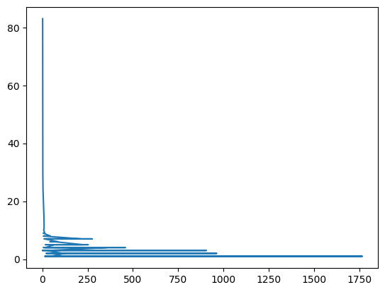
(refined_df
>> arrange(-_.age_days)
>> select(_.full_name, _.age_days))| full_name | age_days | |
|---|---|---|
| 61 | mlcommons/ck | 2998 |
| 65 | polyaxon/datatile | 2492 |
| 21 | weaviate/weaviate | 2487 |
| 66 | polyaxon/traceml | 2441 |
| 103 | VertaAI/modeldb | 2284 |
| ... | ... | ... |
| 196 | terrytangyuan/awesome-kubeflow | 11 |
| 847 | YahyaGrb/mlflow_rasa_track | 10 |
| 1007 | prondos/ax-ml-ops | 7 |
| 822 | IAmRiteshKoushik/ML-for-Dummies | 5 |
| 685 | eli64s/gpt_auto_markdown_docs | 4 |
949 rows × 2 columns
print ("age mean: ", refined_df.age_days.mean())
print("age median: ", refined_df.age_days.median())
print("age max: ", refined_df.age_days.max())
print ("stars mean: ", refined_df.stargazers_count.mean())
print("stars median: ", refined_df.stargazers_count.median())
print("stars max: ", refined_df.stargazers_count.max())age mean: 564.3013698630137
age median: 485.0
age max: 2998
stars mean: 301.9378292939937
stars median: 4.0
stars max: 32107(refined_df
>> select(_.full_name, _.stargazers_count, _.node_id)
>> arrange(-_.stargazers_count)
>> head(20)
)| full_name | stargazers_count | node_id | |
|---|---|---|---|
| 0 | GokuMohandas/Made-With-ML | 32107 | MDEwOlJlcG9zaXRvcnkxNTYxNTcwNTU= |
| 1 | jina-ai/jina | 17144 | MDEwOlJlcG9zaXRvcnkyNDAzMTUwNDY= |
| 100 | mlflow/mlflow | 13455 | MDEwOlJlcG9zaXRvcnkxMzYyMDI2OTU= |
| 2 | EthicalML/awesome-production-machine-learning | 13008 | MDEwOlJlcG9zaXRvcnkxNDQ4NjM1MjU= |
| 3 | microsoft/nni | 12415 | MDEwOlJlcG9zaXRvcnkxMzU2NzM0NTE= |
| 4 | heartexlabs/label-studio | 11747 | MDEwOlJlcG9zaXRvcnkxOTI2NDA1Mjk= |
| 5 | visenger/awesome-mlops | 9382 | MDEwOlJlcG9zaXRvcnkyNDQ2MjAyNjk= |
| 6 | kedro-org/kedro | 8013 | MDEwOlJlcG9zaXRvcnkxODIwNjc1MDY= |
| 7 | great-expectations/great_expectations | 7852 | MDEwOlJlcG9zaXRvcnkxMDMwNzE1MjA= |
| 8 | aws/amazon-sagemaker-examples | 7773 | MDEwOlJlcG9zaXRvcnkxMDc5Mzc4MTU= |
| 9 | chiphuyen/machine-learning-systems-design | 7614 | MDEwOlJlcG9zaXRvcnkyMjM4MjQ1NDY= |
| 10 | Netflix/metaflow | 6312 | MDEwOlJlcG9zaXRvcnkyMDkxMjA2Mzc= |
| 11 | dagster-io/dagster | 6283 | MDEwOlJlcG9zaXRvcnkxMzE2MTk2NDY= |
| 12 | wandb/wandb | 5324 | MDEwOlJlcG9zaXRvcnk4NjAzMTY3NA== |
| 13 | activeloopai/deeplake | 5158 | MDEwOlJlcG9zaXRvcnkyMDE0MDM5MjM= |
| 14 | DataTalksClub/mlops-zoomcamp | 4741 | R_kgDOGQOKeg |
| 15 | bentoml/BentoML | 4440 | MDEwOlJlcG9zaXRvcnkxNzg5NzY1Mjk= |
| 16 | allegroai/clearml | 4001 | MDEwOlJlcG9zaXRvcnkxOTExMjYzODM= |
| 17 | feast-dev/feast | 3894 | MDEwOlJlcG9zaXRvcnkxNjExMzM3NzA= |
| 18 | qdrant/qdrant | 3699 | MDEwOlJlcG9zaXRvcnkyNjgxNjM2MDk= |
sum(refined_df.stargazers_count)286539(refined_df
>> mutate(
year = _.time_since_last_commit_days/365
)
>> filter(_.year >= 1)
)| id | node_id | name | full_name | owner | description | created_at | updated_at | pushed_at | stargazers_count | ... | has_pages | has_discussions | open_issues_count | license | allow_forking | is_template | topics | age_days | time_since_last_commit_days | year | |
|---|---|---|---|---|---|---|---|---|---|---|---|---|---|---|---|---|---|---|---|---|---|
| 74 | 375484255 | MDEwOlJlcG9zaXRvcnkzNzU0ODQyNTU= | mlplatform-workshop | aporia-ai/mlplatform-workshop | {'login': 'aporia-ai', 'id': 56439290, 'node_i... | 🍫 Example code for a basic ML Platform based o... | 2021-06-09 20:42:22 | 2023-01-11T08:46:26Z | 2021-11-03 10:27:17 | 373 | ... | False | False | 3 | {'key': 'mit', 'name': 'MIT License', 'spdx_id... | True | False | [devops, machine-learning, mlops] | 590 | 443 | 1.213699 |
| 106 | 280770443 | MDEwOlJlcG9zaXRvcnkyODA3NzA0NDM= | klever | kleveross/klever | {'login': 'kleveross', 'id': 68282154, 'node_i... | Cloud Native ML/DL Platform | 2020-07-19 01:34:09 | 2022-11-20T12:05:40Z | 2020-09-09 07:04:06 | 126 | ... | False | False | 3 | {'key': 'apache-2.0', 'name': 'Apache License ... | True | False | [ai-infra, cloud-native, deep-learning, kubefl... | 915 | 863 | 2.364384 |
| 114 | 114361956 | MDEwOlJlcG9zaXRvcnkxMTQzNjE5NTY= | lab | beringresearch/lab | {'login': 'beringresearch', 'id': 14840322, 'n... | A lightweight command line interface for the m... | 2017-12-15 11:09:17 | 2022-06-10T18:08:23Z | 2021-01-29 06:25:55 | 18 | ... | False | False | 0 | {'key': 'apache-2.0', 'name': 'Apache License ... | True | False | [ai, machine-learning, ml, model-management, m... | 1862 | 721 | 1.975342 |
| 123 | 269145497 | MDEwOlJlcG9zaXRvcnkyNjkxNDU0OTc= | MMP-Frontend | IPVS-AS/MMP-Frontend | {'login': 'IPVS-AS', 'id': 35486093, 'node_id'... | A Model Management Platform (MMP) for Industry... | 2020-06-03 16:58:48 | 2022-11-10T08:17:16Z | 2020-10-28 18:37:24 | 5 | ... | False | False | 0 | {'key': 'other', 'name': 'Other', 'spdx_id': '... | True | False | [industry-40, machine-learning, model-manageme... | 961 | 814 | 2.230137 |
| 126 | 269140157 | MDEwOlJlcG9zaXRvcnkyNjkxNDAxNTc= | MMP-Backend | IPVS-AS/MMP-Backend | {'login': 'IPVS-AS', 'id': 35486093, 'node_id'... | A Model Management Platform (MMP) for Industry... | 2020-06-03 16:33:23 | 2021-04-21T22:50:40Z | 2020-06-04 08:18:50 | 3 | ... | False | False | 0 | {'key': 'apache-2.0', 'name': 'Apache License ... | True | False | [industry-40, machine-learning, model-manageme... | 961 | 960 | 2.630137 |
| ... | ... | ... | ... | ... | ... | ... | ... | ... | ... | ... | ... | ... | ... | ... | ... | ... | ... | ... | ... | ... | ... |
| 1012 | 432638929 | R_kgDOGcmL0Q | coursera-Machine-Learning-Engineering-for-Prod... | xia0nan/coursera-Machine-Learning-Engineering-... | {'login': 'xia0nan', 'id': 2216266, 'node_id':... | Repo for Machine Learning Engineering for Prod... | 2021-11-28 06:41:20 | 2021-11-29T01:19:27Z | 2021-11-29 01:19:22 | 0 | ... | False | False | 0 | {'key': 'mit', 'name': 'MIT License', 'spdx_id... | True | False | [machine-learning, mlops] | 418 | 417 | 1.142466 |
| 1019 | 270520128 | MDEwOlJlcG9zaXRvcnkyNzA1MjAxMjg= | risk-models-for-medical-prognosis | hirenhk15/risk-models-for-medical-prognosis | {'login': 'hirenhk15', 'id': 19776567, 'node_i... | An End-to-end Machine Learning System with Use... | 2020-06-08 03:54:09 | 2022-03-14T09:10:15Z | 2021-03-12 14:13:20 | 0 | ... | False | False | 0 | {'key': 'mit', 'name': 'MIT License', 'spdx_id... | True | False | [analytics, artificial-intelligence, data, dat... | 956 | 679 | 1.860274 |
| 1023 | 394068528 | MDEwOlJlcG9zaXRvcnkzOTQwNjg1Mjg= | CICD | vitorpbarbosa7/CICD | {'login': 'vitorpbarbosa7', 'id': 57735093, 'n... | First contact with Docker | 2021-08-08 20:58:07 | 2022-03-03T11:36:03Z | 2021-08-09 00:47:25 | 0 | ... | False | False | 0 | None | True | False | [container, docker, machine-learning, mlops] | 530 | 529 | 1.449315 |
| 1025 | 286197790 | MDEwOlJlcG9zaXRvcnkyODYxOTc3OTA= | trains-get-stats | shomratalon/trains-get-stats | {'login': 'shomratalon', 'id': 14982269, 'node... | GitHub Action For Retrieving You Experiment Wi... | 2020-08-09 08:31:45 | 2020-09-14T15:54:38Z | 2020-09-14 15:54:36 | 0 | ... | False | False | 0 | {'key': 'apache-2.0', 'name': 'Apache License ... | True | False | [allegro-trains, deep-learning, machine-learni... | 894 | 858 | 2.350685 |
| 1026 | 389434090 | MDEwOlJlcG9zaXRvcnkzODk0MzQwOTA= | Rossmann-Pharmaceuticals-Sales-prediction | Azariagmt/Rossmann-Pharmaceuticals-Sales-predi... | {'login': 'Azariagmt', 'id': 56393921, 'node_i... | Time series sales forecast for Rossmann Pharma... | 2021-07-25 20:19:38 | 2021-08-04T11:02:24Z | 2021-08-04 09:57:55 | 0 | ... | False | False | 1 | None | True | False | [data-analysis, mlops, regression, rossmann, t... | 544 | 534 | 1.463014 |
247 rows × 25 columns
(refined_df
>> mutate(
year = _.time_since_last_commit_days/365
)
>> ggplot(aes(x = 'year'))
+ geom_density(fill = 'grey')
+ theme_matplotlib()
+ scale_alpha_continuous(breaks = '0.5')
+ theme(
# axis_title_y=element_blank(),
# axis_text_y=element_blank(),
# axis_ticks_minor_y=element_blank()
)
+ labs(
title = "Time since last contribution",
x = "Years",
y = "Density"
)
)/Users/isabelzimmerman/.pyenv/versions/3.9.11/envs/pydemo/lib/python3.9/site-packages/plotnine/guides/guides.py:187: PlotnineWarning: Cannot generate legend for the 'alpha' aesthetic. Make sure you have mapped a variable to it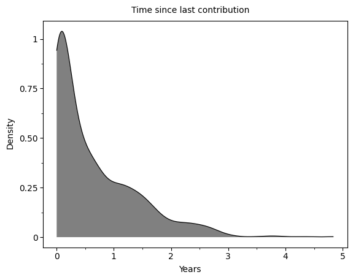
refined_df.time_since_last_commit_days.median()130.0refined_df.time_since_last_commit_days.quantile([.25, .5, 0.75])0.25 19.0
0.50 130.0
0.75 377.0
Name: time_since_last_commit_days, dtype: float64refined_df['age_days'].value_counts().plot()<AxesSubplot: >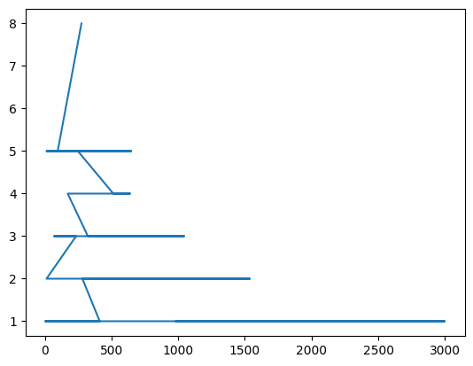
lang = pd.DataFrame(
refined_df.language.value_counts()
.reset_index()
.rename(columns={"index": "language", "language": "n"})
.sort_values(by=['n'])
.astype({'language': 'category'})
)
total_lang = sum(lang.n)#board.pin_write(lang_percent, "lang", type="csv")(lang
>> filter(_.n >= 5)
>> arrange(-_.n)
>> mutate(
percent = _.n/total_lang
)
>> ggplot()
+ geom_col(aes(x = 'reorder(language, percent)', y = "percent"))
+ labs(
y = 'Number of repositories',
x = 'Language',
title = 'Repositories for each language')
+ scale_y_continuous()
+ coord_flip()
+ theme_minimal()
+ theme(axis_text_x = element_text(angle = -75))
)/Users/isabelzimmerman/.pyenv/versions/3.9.11/envs/pydemo/lib/python3.9/site-packages/numpy/core/fromnumeric.py:3464: RuntimeWarning: Mean of empty slice.
/Users/isabelzimmerman/.pyenv/versions/3.9.11/envs/pydemo/lib/python3.9/site-packages/numpy/core/_methods.py:192: RuntimeWarning: invalid value encountered in scalar divide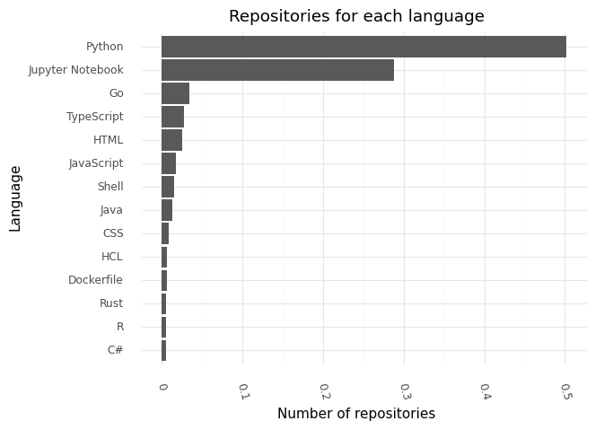
PCA for numeric data
numeric_df = (refined_df
>> select(_.stargazers_count,
_.has_issues,
_.has_projects,
_.has_downloads,
_.has_wiki,
_.has_pages,
_.has_discussions,
_.open_issues_count,
_.allow_forking,
_.is_template,
_.age_days,
_.time_since_last_commit_days,
_.description)
)
numeric_df.columnsIndex(['stargazers_count', 'has_issues', 'has_projects', 'has_downloads',
'has_wiki', 'has_pages', 'has_discussions', 'open_issues_count',
'allow_forking', 'is_template', 'age_days',
'time_since_last_commit_days', 'description'],
dtype='object')import pins
board = pins.board_folder(".")
import pins
board = pins.board_folder(".")
board.pin_write(numeric_df, "train_data", type='csv')Writing pin:
Name: 'train_data'
Version: 20230425T174752Z-e7222Meta(title='train_data: a pinned 949 x 13 DataFrame', description=None, created='20230425T174752Z', pin_hash='e72220ceddde1cfc', file='train_data.csv', file_size=135626, type='csv', api_version=1, version=Version(created=datetime.datetime(2023, 4, 25, 17, 47, 52, 277381), hash='e72220ceddde1cfc'), name='train_data', user={}, local={})numeric_df.corr()/var/folders/5w/dhznpltj14n3nxr4fybjj8_w0000gn/T/ipykernel_10565/1242074588.py:1: FutureWarning: The default value of numeric_only in DataFrame.corr is deprecated. In a future version, it will default to False. Select only valid columns or specify the value of numeric_only to silence this warning.| stargazers_count | has_issues | has_projects | has_downloads | has_wiki | has_pages | has_discussions | open_issues_count | allow_forking | is_template | age_days | time_since_last_commit_days | |
|---|---|---|---|---|---|---|---|---|---|---|---|---|
| stargazers_count | 1.000000 | 0.021500 | 0.011649 | 0.005701 | -0.074833 | 0.106701 | 0.167507 | 0.443709 | NaN | -0.016668 | 0.318012 | -0.142360 |
| has_issues | 0.021500 | 1.000000 | 0.399281 | -0.004886 | 0.310519 | 0.014127 | 0.034267 | 0.023691 | NaN | -0.013762 | -0.056031 | 0.080816 |
| has_projects | 0.011649 | 0.399281 | 1.000000 | -0.009095 | 0.725250 | -0.027779 | -0.056568 | -0.001913 | NaN | 0.027398 | -0.077540 | 0.140177 |
| has_downloads | 0.005701 | -0.004886 | -0.009095 | 1.000000 | 0.091592 | 0.012357 | 0.012120 | 0.003917 | NaN | 0.005868 | 0.009544 | 0.028037 |
| has_wiki | -0.074833 | 0.310519 | 0.725250 | 0.091592 | 1.000000 | -0.106657 | -0.163847 | -0.144293 | NaN | -0.012411 | -0.115923 | 0.184562 |
| has_pages | 0.106701 | 0.014127 | -0.027779 | 0.012357 | -0.106657 | 1.000000 | 0.216159 | 0.083953 | NaN | -0.032499 | 0.053643 | -0.147440 |
| has_discussions | 0.167507 | 0.034267 | -0.056568 | 0.012120 | -0.163847 | 0.216159 | 1.000000 | 0.271834 | NaN | 0.024509 | 0.139259 | -0.214890 |
| open_issues_count | 0.443709 | 0.023691 | -0.001913 | 0.003917 | -0.144293 | 0.083953 | 0.271834 | 1.000000 | NaN | -0.024231 | 0.327697 | -0.153358 |
| allow_forking | NaN | NaN | NaN | NaN | NaN | NaN | NaN | NaN | NaN | NaN | NaN | NaN |
| is_template | -0.016668 | -0.013762 | 0.027398 | 0.005868 | -0.012411 | -0.032499 | 0.024509 | -0.024231 | NaN | 1.000000 | -0.024603 | -0.076137 |
| age_days | 0.318012 | -0.056031 | -0.077540 | 0.009544 | -0.115923 | 0.053643 | 0.139259 | 0.327697 | NaN | -0.024603 | 1.000000 | 0.236959 |
| time_since_last_commit_days | -0.142360 | 0.080816 | 0.140177 | 0.028037 | 0.184562 | -0.147440 | -0.214890 | -0.153358 | NaN | -0.076137 | 0.236959 | 1.000000 |
PCA of numeric repo data
not scaled
pca_numeric = PCA(n_components=2).fit(numeric_df)
pca_numeric_output = pca_numeric.transform(numeric_df)ValueError: could not convert string to float: 'Learn how to responsibly develop, deploy and maintain production machine learning applications.'numeric_df.dtypesstargazers_count int64
has_issues bool
has_projects bool
has_downloads bool
has_wiki bool
has_pages bool
has_discussions bool
open_issues_count int64
allow_forking bool
is_template bool
age_days int64
time_since_last_commit_days int64
dtype: objectpca_numeric.components_array([[ 9.95783126e-01, 1.90231055e-06, 1.51537777e-06,
1.08088645e-07, -1.47462294e-05, 2.12904286e-05,
3.38724621e-05, 2.26738089e-02, 0.00000000e+00,
-1.64106884e-06, 8.59427426e-02, -2.27092158e-02],
[-7.49244672e-02, -1.14259322e-05, -2.71273552e-05,
1.00932636e-06, -3.19559086e-05, -1.89731021e-05,
3.01801733e-05, 3.11311337e-02, -0.00000000e+00,
-1.40761332e-05, 9.44231553e-01, 3.19129985e-01]])# https://stackoverflow.com/questions/47370795/pca-on-sklearn-how-to-interpret-pca-components
# good PCA refresher https://towardsdatascience.com/pca-clearly-explained-how-when-why-to-use-it-and-feature-importance-a-guide-in-python-7c274582c37e
def pca_plot(transformed_data, components):
x = transformed_data[:, 0]
y = transformed_data[:, 1]
n = components.shape[0]
plt.scatter(x, y)
plt.xlabel("PC{}".format(1))
plt.ylabel("PC{}".format(2))
plt.grid()
for i in range(n):
plt.arrow(0, 0, components[i, 0], components[i, 1], color="black", alpha=0.5)
plt.text(
components[i, 0] * 1.3,
components[i, 1] * 1.3,
"Var " + str(i + 1),
color="black",
ha="center",
va="center",
)
def most_important_feature(components, data):
most_important = [np.abs(components[i]).argmax() for i in range(components.shape[0])]
initial_feature_names = data.columns
most_important_names = [initial_feature_names[most_important[i]] for i in range(components.shape[0])]
dic = {'PC{}'.format(i): most_important_names[i] for i in range(components.shape[0])}
return pd.DataFrame(dic.items())plt.title("PCA of MLOps GitHub dataset, numeric columns")
pca_plot(pca_numeric_output, pca_numeric.components_)
plt.show()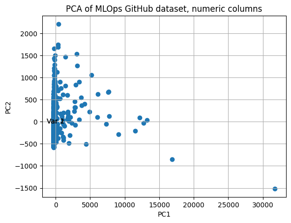
most_important_feature(pca_numeric.components_, numeric_df)| 0 | 1 | |
|---|---|---|
| 0 | PC0 | stargazers_count |
| 1 | PC1 | age_days |
scaled
should i transform this data? feature scaling https://scikit-learn.org/stable/auto_examples/preprocessing/plot_scaling_importance.html#sphx-glr-auto-examples-preprocessing-plot-scaling-importance-py
scaled_numeric_df = StandardScaler().fit_transform(numeric_df)
pca_numeric_scaled = PCA(n_components=2).fit(scaled_numeric_df)
pca_numeric_scaled_output = pca_numeric_scaled.transform(scaled_numeric_df)numeric_df.columnsIndex(['stargazers_count', 'has_issues', 'has_projects', 'has_downloads',
'has_wiki', 'has_pages', 'has_discussions', 'open_issues_count',
'allow_forking', 'is_template', 'age_days',
'time_since_last_commit_days'],
dtype='object')what does this mean?
plt.title("PCA of MLOps GitHub dataset, scaled numeric columns")
pca_plot(pca_numeric_scaled_output, pca_numeric_scaled.components_)
plt.show()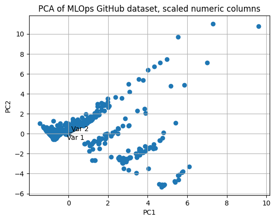
# from https://scikit-learn.org/stable/auto_examples/cluster/plot_bisect_kmeans.html#sphx-glr-auto-examples-cluster-plot-bisect-kmeans-py
from sklearn.cluster import KMeans, DBSCAN
n_clusters_list = [3, 4, 5, 8]
clustering_algorithms = {
"K-Means": KMeans,
}
# Make subplots for each variant
fig, axs = plt.subplots(
len(clustering_algorithms), len(n_clusters_list), figsize=(12, 5)
)
for i, (algorithm_name, Algorithm) in enumerate(clustering_algorithms.items()):
for j, n_clusters in enumerate(n_clusters_list):
algo = Algorithm(n_clusters=n_clusters, random_state=500, n_init=3)
algo.fit(pca_numeric_scaled_output)
centers = algo.cluster_centers_
axs[j].scatter(pca_numeric_scaled_output[:, 0], pca_numeric_scaled_output[:, 1], s=10, c=algo.labels_)
axs[j].scatter(centers[:, 0], centers[:, 1], c="r", s=20)
axs[j].set_title(f"{algorithm_name} : {n_clusters} clusters")
# Hide x labels and tick labels for top plots and y ticks for right plots.
for ax in axs.flat:
ax.label_outer()
ax.set_xticks([])
ax.set_yticks([])
plt.show()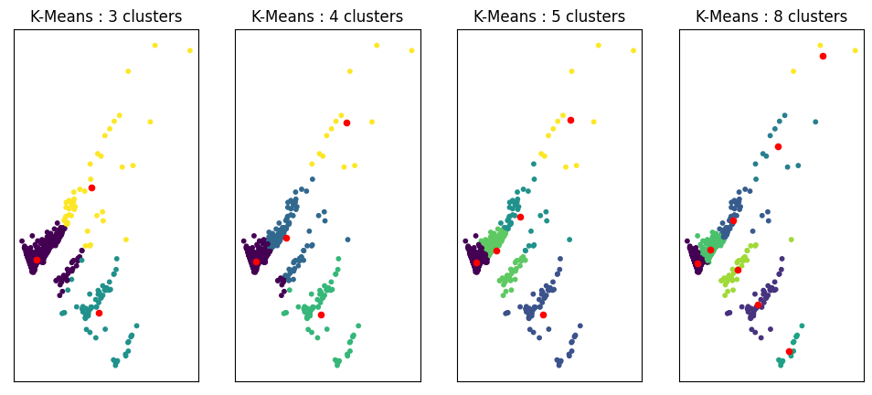
import numpy as np
from sklearn.cluster import DBSCAN
from sklearn import metrics
db = DBSCAN(eps = 0.5, min_samples=5).fit(pca_numeric_scaled_output)
labels = db.labels_
# Number of clusters in labels, ignoring noise if present.
n_clusters_ = len(set(labels)) - (1 if -1 in labels else 0)
n_noise_ = list(labels).count(-1)
print("Estimated number of clusters: %d" % n_clusters_)
print("Estimated number of noise points: %d" % n_noise_)Estimated number of clusters: 5
Estimated number of noise points: 32unique_labels = set(labels)
core_samples_mask = np.zeros_like(labels, dtype=bool)
core_samples_mask[db.core_sample_indices_] = True
colors = [plt.cm.Spectral(each) for each in np.linspace(0, 1, len(unique_labels))]
for k, col in zip(unique_labels, colors):
if k == -1:
# Black used for noise.
col = [0, 0, 0, 1]
class_member_mask = labels == k
xy = pca_numeric_scaled_output[class_member_mask & core_samples_mask]
plt.plot(
xy[:, 0],
xy[:, 1],
"o",
markerfacecolor=tuple(col),
markeredgecolor="k",
markersize=14,
)
xy = pca_numeric_scaled_output[class_member_mask & ~core_samples_mask]
plt.plot(
xy[:, 0],
xy[:, 1],
"o",
markerfacecolor=tuple(col),
markeredgecolor="k",
markersize=6,
)
plt.title(f"DBSCAN estimated number of clusters: {n_clusters_}")
plt.show()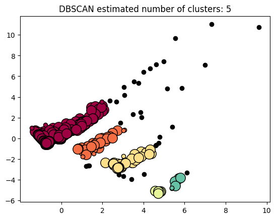
numeric_df['pca_x'] = pca_numeric_scaled_output[:,0]
numeric_df['pca_y'] = pca_numeric_scaled_output[:,1](numeric_df
>> filter(_.pca_x < 0, _.pca_y < 0)
)| stargazers_count | has_issues | has_projects | has_downloads | has_wiki | has_pages | has_discussions | open_issues_count | allow_forking | is_template | age_days | time_since_last_commit_days | pca_x | pca_y | |
|---|---|---|---|---|---|---|---|---|---|---|---|---|---|---|
| 70 | 398 | True | True | True | True | False | False | 2 | True | False | 238 | 2 | -0.531758 | -0.192959 |
| 71 | 396 | True | True | True | True | False | False | 1 | True | False | 136 | 81 | -0.664739 | -0.274867 |
| 77 | 357 | True | True | True | True | False | False | 3 | True | False | 430 | 88 | -0.513025 | -0.041034 |
| 93 | 240 | True | True | True | True | False | False | 40 | True | False | 261 | 2 | -0.398149 | -0.008217 |
| 117 | 11 | True | True | True | True | False | False | 1 | True | False | 275 | 45 | -0.622603 | -0.274088 |
| ... | ... | ... | ... | ... | ... | ... | ... | ... | ... | ... | ... | ... | ... | ... |
| 1038 | 0 | True | True | True | True | False | False | 3 | True | False | 98 | 21 | -0.688753 | -0.407986 |
| 1039 | 0 | True | True | True | True | False | False | 0 | True | False | 31 | 31 | -0.745678 | -0.477094 |
| 1040 | 0 | True | True | True | True | False | False | 0 | True | False | 305 | 10 | -0.579480 | -0.261147 |
| 1041 | 0 | True | True | True | True | False | False | 0 | True | False | 231 | 4 | -0.613402 | -0.320219 |
| 1042 | 0 | True | True | True | True | False | False | 0 | True | False | 44 | 10 | -0.719003 | -0.468135 |
458 rows × 14 columns
(numeric_df
>> filter(_.pca_x > 1, _.pca_x < 2, _.pca_y < 0)
)| stargazers_count | has_issues | has_projects | has_downloads | has_wiki | has_pages | has_discussions | open_issues_count | allow_forking | is_template | age_days | time_since_last_commit_days | pca_x | pca_y | |
|---|---|---|---|---|---|---|---|---|---|---|---|---|---|---|
| 56 | 677 | True | False | True | True | False | False | 130 | True | False | 276 | 2 | 1.822870 | -0.943839 |
| 91 | 242 | True | True | True | False | False | False | 18 | True | False | 548 | 83 | 1.258243 | -0.812920 |
| 162 | 127 | True | True | True | False | False | False | 13 | True | False | 470 | 44 | 1.213945 | -0.936983 |
| 196 | 79 | True | True | True | False | True | False | 0 | True | False | 11 | 9 | 1.528874 | -0.978110 |
| 198 | 78 | True | True | True | False | False | True | 10 | True | False | 485 | 326 | 1.835465 | -0.089116 |
| 208 | 72 | True | False | True | True | False | False | 0 | True | False | 345 | 224 | 1.039869 | -1.763245 |
| 222 | 55 | True | True | True | False | False | False | 16 | True | False | 121 | 2 | 1.066207 | -1.219881 |
| 227 | 54 | True | True | True | False | False | False | 5 | True | False | 378 | 8 | 1.154828 | -1.076884 |
| 291 | 25 | True | True | True | False | True | False | 4 | True | False | 668 | 379 | 1.538900 | -0.426156 |
| 299 | 23 | True | True | True | False | False | False | 72 | True | False | 1246 | 2 | 1.880799 | -0.026428 |
| 314 | 20 | True | True | True | False | False | False | 18 | True | False | 723 | 93 | 1.304350 | -0.735272 |
| 321 | 19 | True | True | True | False | False | False | 20 | True | False | 290 | 5 | 1.163181 | -1.073525 |
| 363 | 13 | True | True | True | False | True | False | 11 | True | False | 538 | 5 | 1.845995 | -0.517867 |
| 369 | 12 | True | True | True | False | True | False | 5 | True | False | 616 | 198 | 1.682798 | -0.477111 |
| 395 | 10 | True | True | True | False | True | False | 0 | True | False | 768 | 32 | 1.900114 | -0.395489 |
| 424 | 7 | True | True | True | False | True | False | 0 | True | False | 39 | 16 | 1.524927 | -0.975491 |
| 509 | 4 | False | True | True | True | False | False | 0 | True | False | 300 | 138 | 1.308122 | -2.643825 |
| 580 | 3 | False | True | True | True | False | False | 0 | True | False | 240 | 220 | 1.198851 | -2.686414 |
| 655 | 2 | True | True | True | False | True | False | 0 | True | False | 8 | 4 | 1.518770 | -1.002239 |
| 675 | 1 | True | False | True | True | True | False | 0 | True | False | 203 | 187 | 1.572961 | -1.487499 |
| 767 | 1 | False | True | True | True | False | False | 0 | True | False | 306 | 94 | 1.352146 | -2.642730 |
| 878 | 0 | True | True | True | False | True | False | 1 | True | False | 450 | 177 | 1.596108 | -0.635603 |
| 926 | 0 | True | False | True | True | False | False | 0 | True | False | 632 | 186 | 1.216645 | -1.558117 |
| 1043 | 0 | True | True | True | False | False | False | 0 | True | True | 984 | 3 | 1.459667 | -0.790121 |
most_important_feature(pca_numeric_scaled.components_, numeric_df)| 0 | 1 | |
|---|---|---|
| 0 | PC0 | has_wiki |
| 1 | PC1 | open_issues_count |
what about the self labeled topics at the repo level?
refined_df.topics.iloc[0]['data-engineering',
'data-science',
'deep-learning',
'machine-learning',
'mlops',
'natural-language-processing',
'python',
'pytorch']from collections import Counter
all_topics = (
pd.DataFrame.from_dict(Counter(refined_df.topics.sum()), orient="index")
.reset_index()
.rename(columns={"index": "topics", 0: "n"})
)(all_topics
>> arrange(-_.n)
)| topics | n | |
|---|---|---|
| 4 | mlops | 938 |
| 3 | machine-learning | 512 |
| 6 | python | 237 |
| 1 | data-science | 195 |
| 2 | deep-learning | 169 |
| ... | ... | ... |
| 1739 | full-stack | 1 |
| 1740 | plant | 1 |
| 1741 | plantdiseasedetection | 1 |
| 1742 | web | 1 |
| 1743 | azuremlops | 1 |
1744 rows × 2 columns
(all_topics
>> filter(_.n > 1)
>> count()
)| n | |
|---|---|
| 0 | 610 |
all_topics['topics'] = all_topics.topics.str.replace("-", " ")
all_topics| topics | n | |
|---|---|---|
| 0 | data engineering | 30 |
| 1 | data science | 195 |
| 2 | deep learning | 169 |
| 3 | machine learning | 512 |
| 4 | mlops | 938 |
| ... | ... | ... |
| 1739 | full stack | 1 |
| 1740 | plant | 1 |
| 1741 | plantdiseasedetection | 1 |
| 1742 | web | 1 |
| 1743 | azuremlops | 1 |
1744 rows × 2 columns
what about licenses?
refined_df['license'] = refined_df.license.apply(pd.Series, dtype = 'object').keyrefined_df.license.astype("category")0 mit
1 apache-2.0
2 mit
3 mit
4 apache-2.0
...
1039 NaN
1040 NaN
1041 NaN
1042 mit
1043 mit
Name: license, Length: 986, dtype: category
Categories (13, object): ['agpl-3.0', 'apache-2.0', 'bsd-2-clause', 'bsd-3-clause', ..., 'mit', 'mit-0', 'mpl-2.0', 'other']refined_df| id | node_id | name | full_name | owner | description | created_at | updated_at | pushed_at | stargazers_count | ... | has_wiki | has_pages | has_discussions | open_issues_count | license | allow_forking | is_template | topics | age_days | time_since_last_commit_days | |
|---|---|---|---|---|---|---|---|---|---|---|---|---|---|---|---|---|---|---|---|---|---|
| 0 | 156157055 | MDEwOlJlcG9zaXRvcnkxNTYxNTcwNTU= | Made-With-ML | GokuMohandas/Made-With-ML | {'login': 'GokuMohandas', 'id': 8000987, 'node... | Learn how to responsibly develop, deploy and m... | 2018-11-05 03:44:27 | 2023-01-18T14:24:54Z | 2022-11-08 13:52:44 | 32107 | ... | True | False | False | 6 | mit | True | False | [data-engineering, data-science, deep-learning... | 1537 | 73 |
| 1 | 240315046 | MDEwOlJlcG9zaXRvcnkyNDAzMTUwNDY= | jina | jina-ai/jina | {'login': 'jina-ai', 'id': 60539444, 'node_id'... | 🔮 Build multimodal AI services via cloud nativ... | 2020-02-13 17:04:44 | 2023-01-18T14:18:14Z | 2023-01-18 16:21:18 | 17144 | ... | False | True | False | 33 | apache-2.0 | True | False | [aiops, airflow, cloud-native, creative-ai, cr... | 1072 | 2 |
| 2 | 144863525 | MDEwOlJlcG9zaXRvcnkxNDQ4NjM1MjU= | awesome-production-machine-learning | EthicalML/awesome-production-machine-learning | {'login': 'EthicalML', 'id': 43532924, 'node_i... | A curated list of awesome open source librarie... | 2018-08-15 14:28:41 | 2023-01-18T17:16:27Z | 2023-01-16 06:42:25 | 13008 | ... | True | True | False | 26 | mit | True | False | [awesome, awesome-list, data-mining, deep-lear... | 1619 | 4 |
| 3 | 135673451 | MDEwOlJlcG9zaXRvcnkxMzU2NzM0NTE= | nni | microsoft/nni | {'login': 'microsoft', 'id': 6154722, 'node_id... | An open source AutoML toolkit for automate mac... | 2018-06-01 05:51:44 | 2023-01-18T12:49:05Z | 2023-01-18 09:27:55 | 12415 | ... | True | False | True | 290 | mit | True | False | [automated-machine-learning, automl, bayesian-... | 1694 | 2 |
| 4 | 192640529 | MDEwOlJlcG9zaXRvcnkxOTI2NDA1Mjk= | label-studio | heartexlabs/label-studio | {'login': 'heartexlabs', 'id': 48309720, 'node... | Label Studio is a multi-type data labeling and... | 2019-06-19 02:00:44 | 2023-01-18T11:31:18Z | 2023-01-18 17:09:25 | 11747 | ... | True | False | True | 448 | apache-2.0 | True | False | [annotation, annotation-tool, annotations, bou... | 1311 | 2 |
| ... | ... | ... | ... | ... | ... | ... | ... | ... | ... | ... | ... | ... | ... | ... | ... | ... | ... | ... | ... | ... | ... |
| 1039 | 580399205 | R_kgDOIpgwZQ | step-functions-sagemaker-ml-pipeline | hkford/step-functions-sagemaker-ml-pipeline | {'login': 'hkford', 'id': 82389275, 'node_id':... | ML pipeline with AWS Step Functions and Amazon... | 2022-12-20 13:17:41 | 2022-12-20T13:33:21Z | 2022-12-20 13:32:14 | 0 | ... | True | False | False | 0 | NaN | True | False | [mlops, sagemaker, step-functions] | 31 | 31 |
| 1040 | 472158586 | R_kgDOHCSReg | genome | edeliu2000/genome | {'login': 'edeliu2000', 'id': 8235794, 'node_i... | AI AutoML Platform Services for Managing Milli... | 2022-03-21 02:18:15 | 2022-12-09T17:27:37Z | 2023-01-10 23:03:03 | 0 | ... | True | False | False | 0 | NaN | True | False | [automlops, configurable-ai, controllable-ai, ... | 305 | 10 |
| 1041 | 499422453 | R_kgDOHcSU9Q | ml-ops | khoaguin/ml-ops | {'login': 'khoaguin', 'id': 88959106, 'node_id... | A Learning Journal on Machine Learning in Prod... | 2022-06-03 07:38:42 | 2022-06-10T08:40:17Z | 2023-01-16 07:24:02 | 0 | ... | True | False | False | 0 | NaN | True | False | [mlops] | 231 | 4 |
| 1042 | 575407571 | R_kgDOIkwF0w | Plant-disease-Detection | shashank1623/Plant-disease-Detection | {'login': 'shashank1623', 'id': 86946068, 'nod... | Plant Disease Detection using convolutional n... | 2022-12-07 12:53:33 | 2023-01-10T17:25:44Z | 2023-01-10 17:29:52 | 0 | ... | True | False | False | 0 | mit | True | False | [adam-optimizer, cnn, d, deep-learning, develo... | 44 | 10 |
| 1043 | 262970855 | MDEwOlJlcG9zaXRvcnkyNjI5NzA4NTU= | aml-templates | weekoflearning/aml-templates | {'login': 'weekoflearning', 'id': 63700392, 'n... | template repository for azure machine learnings | 2020-05-11 07:30:45 | 2023-01-17T05:37:09Z | 2023-01-17 05:37:05 | 0 | ... | False | False | False | 0 | mit | True | True | [azure-ml, azuremachinelearning, azuremlops, m... | 984 | 3 |
986 rows × 24 columns
what do we know about the PRs?
prs_df = pd.DataFrame(issuespr_total)
prs_df.head()| id | milestone_id | repository_id | user_id | body | closed_at | created_at | locked | number | state | title | updated_at | type | |
|---|---|---|---|---|---|---|---|---|---|---|---|---|---|
| 0 | MDExOlB1bGxSZXF1ZXN0MjI4NDQ0MTI4 | None | MDEwOlJlcG9zaXRvcnkxNTYxNTcwNTU= | MDQ6VXNlcjgwMDA5ODc= | 2018-11-05T18:20:05Z | 2018-11-05T18:14:37Z | False | 1 | MERGED | added instructions for running and contributin... | 2018-11-05T18:20:05Z | PullRequest | |
| 1 | MDExOlB1bGxSZXF1ZXN0MjI4NDQ2MDM3 | None | MDEwOlJlcG9zaXRvcnkxNTYxNTcwNTU= | MDQ6VXNlcjgwMDA5ODc= | 2018-11-05T18:21:46Z | 2018-11-05T18:21:38Z | False | 2 | MERGED | fixed upload image link | 2018-11-05T18:21:46Z | PullRequest | |
| 2 | MDExOlB1bGxSZXF1ZXN0MjI4NDU3Mjg4 | None | MDEwOlJlcG9zaXRvcnkxNTYxNTcwNTU= | MDQ6VXNlcjgwMDA5ODc= | 2018-11-05T19:02:46Z | 2018-11-05T19:02:25Z | False | 3 | MERGED | made readme more readable by adding linebreaks | 2018-11-05T19:02:46Z | PullRequest | |
| 3 | MDExOlB1bGxSZXF1ZXN0MjI4NDU3ODMy | None | MDEwOlJlcG9zaXRvcnkxNTYxNTcwNTU= | MDQ6VXNlcjgwMDA5ODc= | 2018-11-05T19:04:31Z | 2018-11-05T19:04:24Z | False | 4 | MERGED | fixed contribution instructions | 2018-11-05T19:04:32Z | PullRequest | |
| 4 | MDExOlB1bGxSZXF1ZXN0MjI4NDU4NTc0 | None | MDEwOlJlcG9zaXRvcnkxNTYxNTcwNTU= | MDQ6VXNlcjgwMDA5ODc= | 2018-11-05T19:07:24Z | 2018-11-05T19:07:17Z | False | 5 | MERGED | fixed contributing instructions | 2018-11-05T20:47:30Z | PullRequest |
(prs_df
>> distinct(_.type))| type | |
|---|---|
| 0 | PullRequest |
(prs_df
>> count(_.repository_id)
>> arrange(-_.n))| repository_id | n | |
|---|---|---|
| 19 | MDEwOlJlcG9zaXRvcnkxMzE2MTk2NDY= | 6589 |
| 36 | MDEwOlJlcG9zaXRvcnkxNzI4MjIxOTU= | 6478 |
| 21 | MDEwOlJlcG9zaXRvcnkxMzMxMDA4ODA= | 5604 |
| 90 | MDEwOlJlcG9zaXRvcnkyNTM4NDY4Nzk= | 5572 |
| 11 | MDEwOlJlcG9zaXRvcnkxMDMwNzE1MjA= | 5320 |
| ... | ... | ... |
| 267 | R_kgDOGxQ4Bg | 1 |
| 286 | R_kgDOHJgXCw | 1 |
| 293 | R_kgDOHTLodQ | 1 |
| 305 | R_kgDOHhZcuw | 1 |
| 330 | R_kgDOIu169Q | 1 |
333 rows × 2 columns
users_issues = issues_df >> select(_.user_id) >> distinct()
users_prs = prs_df >> select(_.user_id) >> distinct()
print(f'issues: {len(users_issues)}')
print(f'prs: {len(users_prs)}')issues: 17649
prs: 7373(pd.concat([users_issues, users_prs])
>> distinct()
)| user_id | |
|---|---|
| 0 | MDQ6VXNlcjExNTMwMjQ3 |
| 1 | MDQ6VXNlcjIyOTU5MDM3 |
| 2 | MDQ6VXNlcjI3MTQzMDU4 |
| 3 | MDQ6VXNlcjcwMDYxNw== |
| 4 | MDQ6VXNlcjExNTU1NzM= |
| ... | ... |
| 17644 | MDQ6VXNlcjM3NTczNjI5 |
| 17645 | U_kgDOBt1LjA |
| 17646 | U_kgDOBZf1Ng |
| 17647 | MDQ6VXNlcjY0NDg3MDM4 |
| 17648 | MDQ6VXNlcjEwNTM2MjE4 |
17649 rows × 1 columns
assert len(prs_df.columns) == len(issues_df.columns)combine_issues_prs = pd.concat([issues_df, prs_df])(combine_issues_prs
>> distinct(_.repository_id)
)| repository_id | |
|---|---|
| 0 | MDEwOlJlcG9zaXRvcnkxNTYxNTcwNTU= |
| 1 | MDEwOlJlcG9zaXRvcnkyNDAzMTUwNDY= |
| 2 | MDEwOlJlcG9zaXRvcnkxNDQ4NjM1MjU= |
| 3 | MDEwOlJlcG9zaXRvcnkxMzU2NzM0NTE= |
| 4 | MDEwOlJlcG9zaXRvcnkxOTI2NDA1Mjk= |
| ... | ... |
| 358 | R_kgDOHj3zDw |
| 359 | MDEwOlJlcG9zaXRvcnk0MDIzMDY2NzE= |
| 360 | R_kgDOHozdZg |
| 361 | R_kgDOH9bggw |
| 362 | R_kgDOHHCVKA |
363 rows × 1 columns
from siuba.dply.vector import n_distinct
(prs_df
>> select(_.repository_id, _.user_id)
>> distinct()
>> group_by(_.repository_id)
>> mutate(n_pr_makers = n_distinct(_.user_id))
>> ungroup()
>> select(_.repository_id, _.n_pr_makers)
>> distinct()
>> arrange(-_.n_pr_makers)
)| repository_id | n_pr_makers | |
|---|---|---|
| 85 | MDEwOlJlcG9zaXRvcnkxMzYyMDI2OTU= | 725 |
| 8 | MDEwOlJlcG9zaXRvcnkxMDc5Mzc4MTU= | 565 |
| 23 | MDEwOlJlcG9zaXRvcnkxMzMxMDA4ODA= | 434 |
| 7 | MDEwOlJlcG9zaXRvcnkxMDMwNzE1MjA= | 398 |
| 11 | MDEwOlJlcG9zaXRvcnkxMzE2MTk2NDY= | 303 |
| ... | ... | ... |
| 327 | R_kgDOHJgXCw | 1 |
| 328 | R_kgDOHozdZg | 1 |
| 329 | R_kgDOH9bggw | 1 |
| 331 | MDEwOlJlcG9zaXRvcnkzODk0MzQwOTA= | 1 |
| 332 | R_kgDOIOHC-A | 1 |
333 rows × 2 columns
len(prs_df
>> distinct(_.repository_id)
)333prs_df['created_at'] = prs_df.created_at.astype("datetime64[ns]")
# MLFLOW
# (prs_df
# >> mutate(
# month = _.created_at.dt.month,
# year = _.created_at.dt.year
# )
# >> group_by(_.repository_id, _.month, _.year)
# >> count(_.month, _.year)
# >> filter(_.repository_id == 'MDEwOlJlcG9zaXRvcnkxMzYyMDI2OTU=')
# >> arrange(_.year, _.month)
# )(prs_df
>> mutate(
year_month = _.created_at.dt.strftime('%Y-%m')
)
>> filter(_.year_month < '2023-01')
>> count(_.year_month)
>> ggplot(aes(x = 'year_month', y = 'n'))
+ geom_point()
+ labs(x='Date', y='Number of pull requests')
+ scale_x_date(date_breaks = '1 year')
+ theme_matplotlib()
+ theme(
figure_size=(10,5),
axis_text_x=element_text(margin={'t': 5, 'r': 5})
)
+ labs(
title="Gross product pull requests for all repositories"
)
)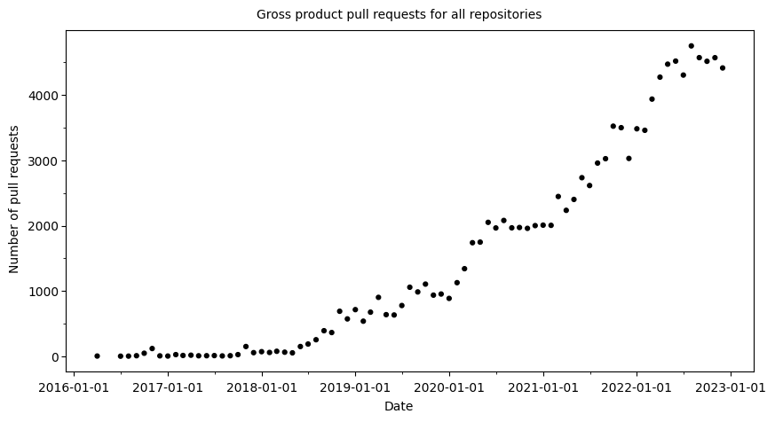
refined_df >> filter(_.full_name == 'mlflow/mlflow')| id | node_id | name | full_name | owner | description | created_at | updated_at | pushed_at | stargazers_count | ... | has_wiki | has_pages | has_discussions | open_issues_count | license | allow_forking | is_template | topics | age_days | time_since_last_commit_days | |
|---|---|---|---|---|---|---|---|---|---|---|---|---|---|---|---|---|---|---|---|---|---|
| 100 | 136202695 | MDEwOlJlcG9zaXRvcnkxMzYyMDI2OTU= | mlflow | mlflow/mlflow | {'login': 'mlflow', 'id': 39938107, 'node_id':... | Open source platform for the machine learning ... | 2018-06-05 16:05:58 | 2023-01-18T18:35:07Z | 2023-01-19 00:47:53 | 13455 | ... | True | False | True | 1008 | apache-2.0 | True | False | [ai, apache-spark, machine-learning, ml, mlflo... | 1690 | 1 |
1 rows × 24 columns
len(prs_df)121704(prs_df
>> filter(_.state == 'MERGED')
>> count()
)| n | |
|---|---|
| 0 | 100836 |
prs_small = (prs_df
>> filter(_.state == 'MERGED')
>> select(_.repository_id, _.title)
)from sklearn.feature_extraction import text
additional_stopwords = frozenset({
"readme",
"md",
"update",
"fix",
"fixing",
"fixes",
"docs",
"add",
"updated",
"feat",
"page",
"typo",
"ci",
"cd",
"github",
"chore",
"tests",
"test",
"feature",
"updates",
"links",
"merge",
"dev",
"broken",
"example",
"cli",
"update",
"deps",
"migration",
"lint",
"setup",
"link",
"update",
"error",
"message",
"remove",
"deps",
"update",
"dependency",
"dependencies",
"requirements",
"chore",
"v1",
"components",
"merge",
"0",
"1",
"bump",
"2",
"3",
"release",
"version",
"v0",
"build",
"support",
"refactor",
"type",
"types",
"coverage",
"master",
"main",
"branch",
"clean",
"documentation",
"testing"
})
stop_words = text.ENGLISH_STOP_WORDS.union(additional_stopwords)# copied from 03_clean_text.ipynb
from nltk.tokenize import RegexpTokenizer
from sklearn.feature_extraction.text import TfidfVectorizer
from sklearn.decomposition import LatentDirichletAllocation
tokenizer = RegexpTokenizer(r'\w+')
pr_sents = prs_small.title.to_list()
# Vectorize document using TF-IDF
pr_tfidf = TfidfVectorizer(lowercase=True,
stop_words=stop_words,
ngram_range = (1,1),
tokenizer = tokenizer.tokenize)
# Fit and Transform the documents
pr_train_data = pr_tfidf.fit_transform(pr_sents)
# Define the number of topics or components
num_components=5
# Create LDA object
pr_model=LatentDirichletAllocation(n_components=num_components)
# Fit and Transform SVD model on data
pr_lda_matrix = pr_model.fit_transform(pr_train_data)
# Get Components
pr_lda_components=pr_model.components_# Print the topics with their terms
pr_terms = pr_tfidf.get_feature_names_out()
for index, component in enumerate(pr_lda_components):
zipped = zip(pr_terms, component)
top_terms_key=sorted(zipped, key = lambda t: t[1], reverse=True)[:7]
top_terms_list=list(dict(top_terms_key).keys())
print("Topic "+str(index)+": ",top_terms_list)Topic 0: ['7', 'doc', 'python', 'examples', 'actions', 'maintenance', 'model']
Topic 1: ['5', '4', '6', 'docker', '9', 'commit', 'sdk']
Topic 2: ['eslint', 'plugin', 'cleanup', 'monorepo', 'spark', 'v4', 'v5']
Topic 3: ['changelog', 'mlflow', 'helm', 'sample', 'small', 'added', 'use']
Topic 4: ['api', 'run', 'make', 'integration', 'dagit', 'model', 'sdk']import matplotlib.pyplot as plt
def plot_top_words(model, feature_names, n_top_words, title):
fig, axes = plt.subplots(2, 5, figsize=(30, 15), sharex=True)
axes = axes.flatten()
for topic_idx, topic in enumerate(model.components_):
top_features_ind = topic.argsort()[: -n_top_words - 1 : -1]
top_features = [feature_names[i] for i in top_features_ind]
weights = topic[top_features_ind]
ax = axes[topic_idx]
ax.barh(top_features, weights, height=0.7)
ax.set_title(f"Topic {topic_idx +1}", fontdict={"fontsize": 30})
ax.invert_yaxis()
ax.tick_params(axis="both", which="major", labelsize=20)
for i in "top right left".split():
ax.spines[i].set_visible(False)
fig.suptitle(title, fontsize=40)
plt.subplots_adjust(top=0.90, bottom=0.05, wspace=0.90, hspace=0.3)
plt.show()
plot_top_words(pr_model, pr_tfidf.get_feature_names_out(), 20, "top 10 topics")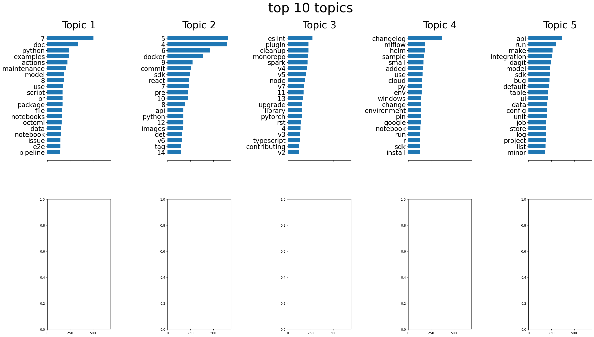
okay, so all the topics are around maintainance, not necessarily features or mlops-y tasks. this is pretty expected
what about issues?
looking at issues titles, not body
issues_df = pd.DataFrame(issues_total)
issues_df.head()| id | milestone_id | repository_id | user_id | body | closed_at | created_at | locked | number | state | title | updated_at | type | |
|---|---|---|---|---|---|---|---|---|---|---|---|---|---|
| 0 | MDU6SXNzdWUzODk2NzE0MDM= | None | MDEwOlJlcG9zaXRvcnkxNTYxNTcwNTU= | MDQ6VXNlcjExNTMwMjQ3 | Great repo!\r\nCan i translate it to Chinese? | 2018-12-11T11:14:53Z | 2018-12-11T09:37:03Z | False | 69 | CLOSED | Chinese translation | 2022-09-16T08:27:39Z | Issue |
| 1 | MDU6SXNzdWUzOTA0OTEwMzg= | None | MDEwOlJlcG9zaXRvcnkxNTYxNTcwNTU= | MDQ6VXNlcjIyOTU5MDM3 | Is it okay to contribute to segmentation part ... | 2018-12-13T16:22:16Z | 2018-12-13T02:25:32Z | False | 76 | CLOSED | Contribution to Computer Vision? | 2018-12-13T16:22:16Z | Issue |
| 2 | MDU6SXNzdWUzOTA1NDQ4OTM= | None | MDEwOlJlcG9zaXRvcnkxNTYxNTcwNTU= | MDQ6VXNlcjI3MTQzMDU4 | Could u pls release a instruction on Jupyter n... | 2018-12-13T13:33:46Z | 2018-12-13T07:05:19Z | False | 78 | CLOSED | Notebook | 2018-12-13T13:33:46Z | Issue |
| 3 | MDU6SXNzdWUzOTA3NDQ3OTQ= | None | MDEwOlJlcG9zaXRvcnkxNTYxNTcwNTU= | MDQ6VXNlcjcwMDYxNw== | In the [numpy notebook](https://github.com/Gok... | 2018-12-13T16:22:02Z | 2018-12-13T16:00:06Z | False | 83 | CLOSED | 3d or 2d numpy array? | 2018-12-13T16:22:02Z | Issue |
| 4 | MDU6SXNzdWUzOTI3NTY3OTc= | None | MDEwOlJlcG9zaXRvcnkxNTYxNTcwNTU= | MDQ6VXNlcjExNTU1NzM= | Hi @GokuMohandas,\r\n\r\nI've been recently ta... | 2018-12-25T20:42:17Z | 2018-12-19T20:02:14Z | False | 90 | CLOSED | Alternative to Colab and Binder for running `p... | 2018-12-26T15:44:03Z | Issue |
len(issues_df)55994issues_sents = issues_df.title.to_list()
# Vectorize document using TF-IDF
issues_tfidf = TfidfVectorizer(lowercase=True,
stop_words=stop_words,
ngram_range = (1,1),
tokenizer = tokenizer.tokenize)
# Fit and Transform the documents
issues_train_data = issues_tfidf.fit_transform(pr_sents)
# Define the number of topics or components
num_components=5
# Create LDA object
issues_model=LatentDirichletAllocation(n_components=num_components)
# Fit and Transform SVD model on data
issues_lda_matrix = issues_model.fit_transform(pr_train_data)
# Get Components
issues_lda_components = issues_model.components_# Print the topics with their terms
issues_terms = issues_tfidf.get_feature_names_out()
for index, component in enumerate(issues_lda_components):
zipped = zip(issues_terms, component)
top_terms_key=sorted(zipped, key = lambda t: t[1], reverse=True)[:7]
top_terms_list=list(dict(top_terms_key).keys())
print("Topic "+str(index)+": ",top_terms_list)Topic 0: ['7', 'commit', 'pre', 'pytorch', 'sdk', 'examples', 'helm']
Topic 1: ['pipeline', 'api', 'det', 'use', 'sdk', 'node', 'default']
Topic 2: ['changelog', 'react', 'minor', 'plugin', 'eslint', 'v3', 'module']
Topic 3: ['4', '5', '6', 'python', '8', 'docker', 'monorepo']
Topic 4: ['doc', 'run', 'config', 'ui', 'api', 'store', 'command']from mizani.breaks import date_breaks
from mizani.formatters import date_format
(repo_df
>> select(_.created_at)
>> mutate(
created_at = _.created_at.astype("datetime64[ns]"),
n = 1
)
>> arrange(_.created_at)
>> mutate(
n_cumsum = _.n.cumsum()
)
>> ggplot()
+ geom_line(aes('created_at', 'n_cumsum'))
+ scale_x_datetime(breaks=date_breaks('1 year'), labels=date_format('%Y')) # modified
+ labs(
x = 'Date',
y= 'Number of repositories',
title = 'Number of repositories with MLOps labels')
+ theme_minimal()
)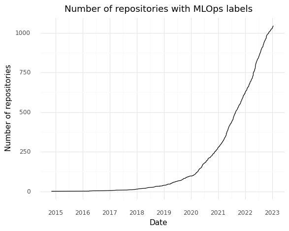